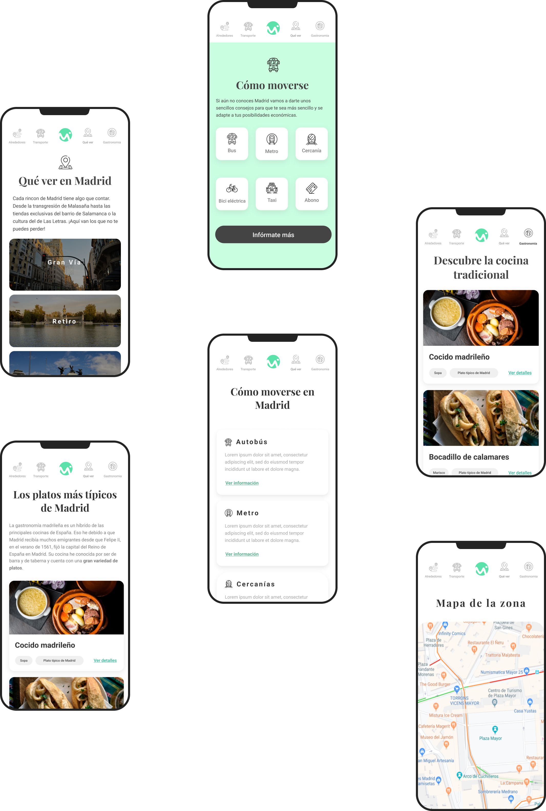

SERVICE CONCEPTUALIZATION PRODUCT DESIGN
USER EXPERIENCE FRONT-END DEVELOPER
The challenge
DESIGN A
NEW
USER EXPERIENCE THAT IS MORE PRACTICAL AND CLOSER TO THE USER
The Madrid metro ticket dispensers are used every day by thousands of users, each with a different need,
but all of them
need an experience that is fast and very intuitive from the very first use.

PROCESS
Benchmark
First, I started doing a benchmark on other tourism websites. My first objective was to focus on a
problem and to try to
find a way to fix them by interviewing the potential users.
Methodology
Once I prioritized the content with user stories I started designing my website with the help of the
Mobile First
methodology. My process' chronology with each single user's story has been: wireframes, tests with
potential users,
digital design and finally programming.
Conceptualization
Through the interviews I understood what the users really needed: the practicality. I wanted to design
something that
was close to them and that would accompany them during their tour of the city.
UI
I used colours that transmitted calm and fun at the same time. I have kept a clean style, a linear
typography and round
shapes to transmit closeness to the user.
PROJECT
UX/UI PROJECT | ACCIONA
2022
Research and design of
Acciona's
new digital rental product